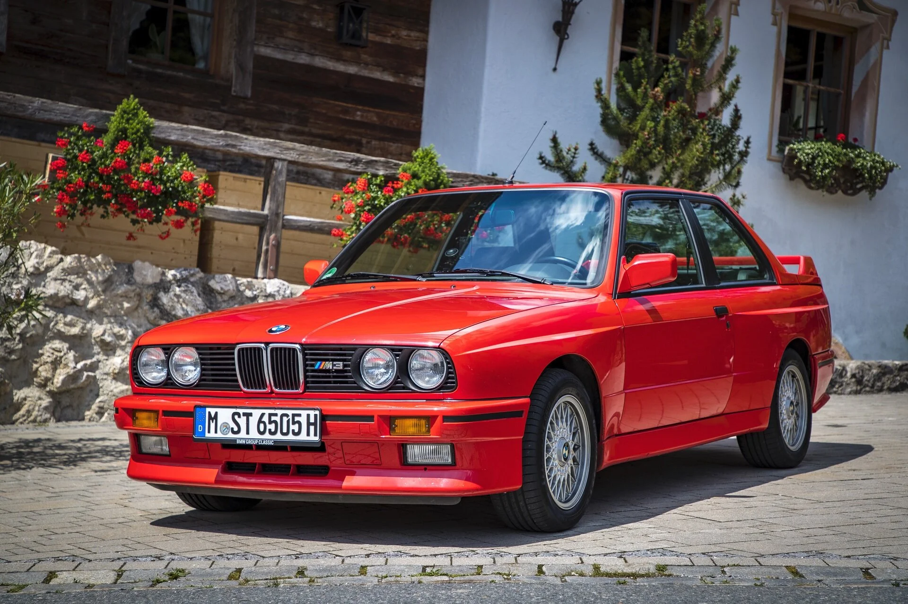
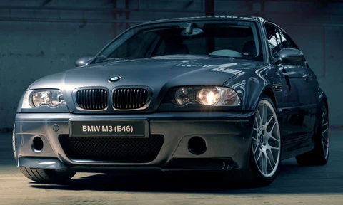
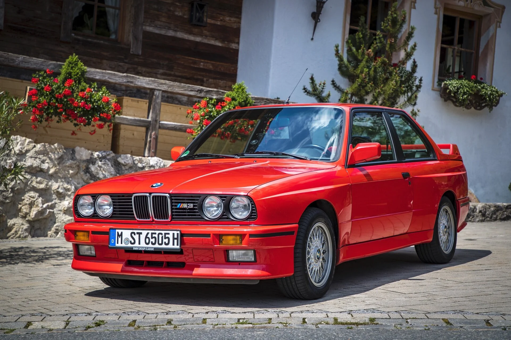
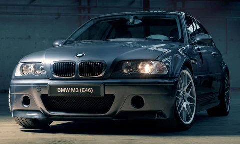
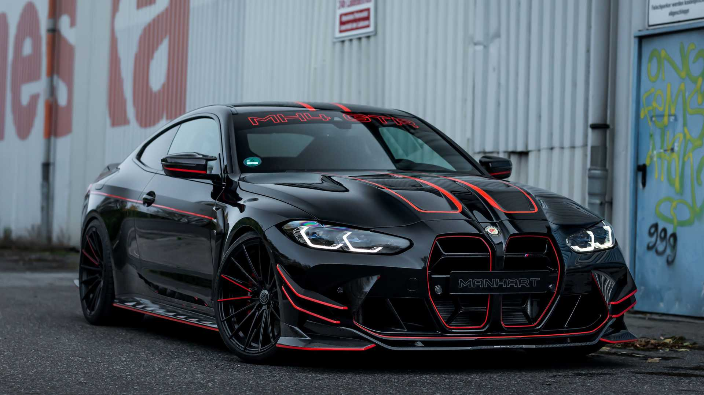
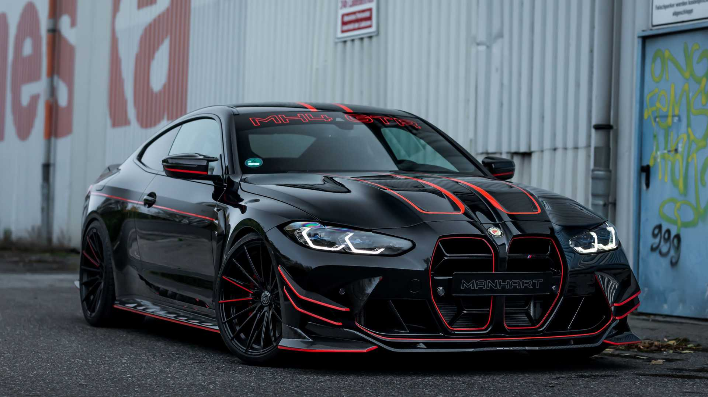
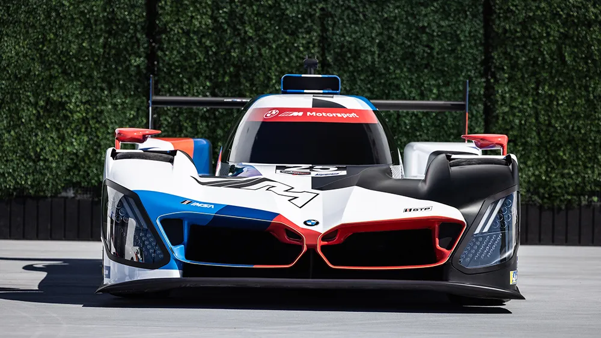
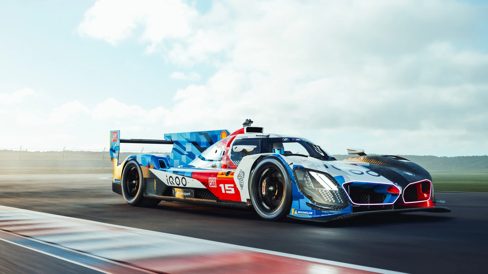
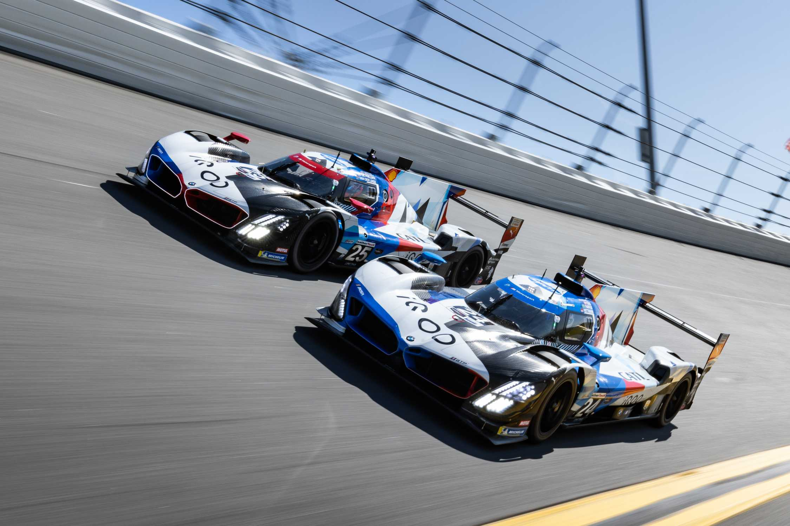

Bayerische Motoren Werke AG (BMW) — გერმანული კომპანია, რომელიც ავტომობილებს, მოტოციკლებსა და ძრავებს აწარმოებს. მისი შტაბ-ბინა მდებარეობს მიუნხენში. „ბეემვეს“ აქციები ფრანკფურტის საფონდო ბირჟაზე განლაგებულ DAX-ზე იყიდება. დაარსების ისტორია „ოთხი ცილინდრი“ - BMW-ს შტაბ-ბინა მიუნხენში. მის წინ კი გასაღების ფორმის BMW-ს მუზეუმია კომპანიის დაარსების ოფიციალურ თარიღად 1917 წლის 21 ივლისი ითვლება, თუმცა „ბეემვეს“ ისტორია რამდენიმე წლით ადრე დაიწყო. 1913 წელს მიუნხენში ორი პატარა ფირმა გამოჩნდა, რომლებსაც სათავეში კარლ რაპი და გუსტავ ოტო (იმ ნიკოლაუს ოტოს შვილი, რომელმაც შიდა წვის ძრავა შექმნა) ედგნენ. აღნიშნული ორი ფირმა პირველი მსოფლიო ომის დროს იძულებით გაერთიანდა და თვითმფრინავის ძრავების გამოშვება დაიწყო. 1916 წელს კომპანიამ სახელი გადაირქვა და „ბაირიშე მოტორენ ვერკე“ ეწოდა. 1917 წელს „ბეემვეს“ ემბლემაც შემუშავდა – მოტრიალე პროპელერის სიმბოლო. ამავე წელს კომპანიის მთავარმა ინჟინერმა, მაქს ფრიცმა 6-ცილინდრიანი საავიაციო ძრავა – ტურ-3ა შექმნა, შემდეგ კი – მოტორ-4, რომლითაც 1919 წელს ფრანც დიმერმა მსოფლიო რეკორდი დაამყარა სიმაღლეზე ხტომაში, როცა ცაში 9 670 მეტრზე ავიდა. მაქს ფრიცმა გამჭრიახობა 1918 წელსაც გამოიჩინა, როდესაც ვერსალის ხელშეკრულებით საავიაციო ძრავების გამოშვება აიკრძალა. „ბეემვეს“ გაკოტრება ემუქრებოდა, მაგრამ მაქსმა მოტოციკლების წარმოება დაიწყო. მან გამოუშვა R-32, რომლის სერიული წარმოება 1923 წელს დაიწყო და მალევე გახდა პოპულარული. ხუთი წლის შემდეგ კომპანიამ დაბა აიზენახში (გერმანია) პატარა ავტომობილების მწარმოებელი ქარხანა შეიძინა, რომელიც 1904 წლიდან უშვებდა მინიატურულ დიქსებს (Dixi). ხელშეკრულების თანახმად, ქარხანა უშვებდა „ოსტინ დიქსის” მარკის ავტომობილებს. ახალი დიქსი დიდი მოთხოვნილებით სარგებლობდა. ამიტომ „ბეემვე“ ძალიან დიდი ხნის განმავლობაში აწარმოებდა ამ მოდელს.
 



BMW M4 — ავტომანქანა, რომელიც შემუშავებულია გერმანული საავტომობილო კომპანია BMW-ს მიერ. BMW-მ ოფიციალურად აღნიშნული მოდელი 2013 წლის აგვისტოში წარადგინა, ხოლო სექტემბერში კი იგი ოფიციალურად გამოვიდა. BMW M4 აღჭურვილი არის 3.0 ლიტრის მოცულობის 6 ცილინდრიანი ძრავით, რომელიც ჯამში 425 ცხენის ძალასა და 550 ნმ მაბრუნებელ მომენტს გამოიმუშავებს, რაც მას საშუალებას აძლევს 100 კმ/სთ სიჩქარე განავითაროს 4.1 წმ-ში. აღნიშნული მოდელის მაქსიმალური სიჩქარე ელექტრონულად ლიმიტირებულია 250 კმ/სთ-მდე. BMW M4 GTS წარდგენილი იქნა 2015 წლის აგვისტოში. BMW M4-ისგან განსხვავებით ამ მოდელს გაუმჯობესებული მახასიათებლები გააჩნია რაც გამოიხატება 493 ცხენის ძალამდე გაზრდილ სიმძლავეში რაც ამ მოდელს საშუალებას აძლევს 100 კმ/სთ-მდე აჩქარდეს 3.8 წმ-ში. აგრეთვე ეს მოდელი წინამორბედთან შედარებით უფრო მსუბუქია და მისი მასა 1510 კგ-ს შეადგენს. მაქსიმალური სიჩქარე კი 305 კმ/სთ-ია. სწორედ ამ მოდელს ეკუთვნის ნიურბურგინგზე უსწრაფესი წრე, რომელიც 7 წუთსა და 28 წამში დაფარა, რაც Ferrari 458-ს შედეგზე ნაკლებია. BMW M4 GTS-ს მხოლოდ 500 ეგზემპლარი შეიქმნა და ყველა მათგანი მალევე გაიყიდა.
 

BMW M Hybrid V8 არის სპორტული პროტოტიპის სარბოლო მანქანა, რომელიც შექმნილია BMW M-ის მიერ და აწყობილია Dallara-ს მიერ. ის შექმნილია ლე მანის დეიტონას h (LMDh) რეგულაციების შესაბამისად და დებიუტი შედგა 2023 წლის IMSA SportsCar Championship-ზე, სეზონის გახსნით 24 საათიან დეიტონას რბოლაზე.[5] ეს BMW-ს პირველი დაბრუნებაა სპორტული პროტოტიპების რბოლის უმაღლეს ლიგაში 1999 წელს BMW V12 LMR-ის შემდეგ.[6] მანქანა ასევე მონაწილეობს FIA-ს მსოფლიო გამძლეობის ჩემპიონატში 2024 წლიდან.[7] 2021 წლის ივნისში, BMW-მ ოფიციალურად გამოაცხადა, რომ ისინი 2023 წელს შეუერთდებოდნენ IMSA-ს GTP კლასს, LMDh-თან თავსებადი სარბოლო დიზაინის გამოყენებით.[8] 3 თვის შემდეგ დადასტურდა, რომ BMW ითანამშრომლებდა Dallara-სთან, როგორც მათი შასის მიმწოდებელი, რითაც BMW გახდა პირველი მწარმოებელი LMDh წესების ნაკრებში, რომელმაც Dallara პარტნიორად აირჩია.[9] Rahal Letterman Lanigan Racing-თან პარტნიორობა IMSA-ში მანქანების კამპანიის მიზნით 2021 წლის ნოემბერში გამოცხადდა, რითაც გაგრძელდა ურთიერთობა, რომელიც 2009 წელს BMW M3 GT2-ით დაიწყო.[10] M Hybrid V8-ის ძრავა არის ორმაგი ტურბო დამტენიანი V8, რომელიც წარმოადგენს BMW M4 DTM-ში 2017 და 2018 წლებში გამოყენებული ძრავის განვითარებას, დაწყვილებული Williams Advanced Engineering-ის, Bosch-ის და Xtrac-ის მიერ მოწოდებულ სტანდარტიზებულ ჰიბრიდულ ნაწილებთან.[11][12][13] 2022 წლის აგვისტოში გამოცხადდა, რომ BMW ასევე მიიყვანდა მანქანას FIA-ს მსოფლიო გამძლეობის ჩემპიონატზე, რომელსაც Team WRT მართავს.[14] M Hybrid V8-მა პირველი შემოწმებები ვარანო დე მელეგარიში 2022 წლის ივლისის ბოლოს დაასრულა, რასაც მოჰყვა ბარსელონა-კატალონიის ტრასაზე, უოტკინს გლენის საერთაშორისო ტრასაზე, ატლანტას გზატკეცილზე და სებრინგის საერთაშორისო ავტოდრომზე.
  